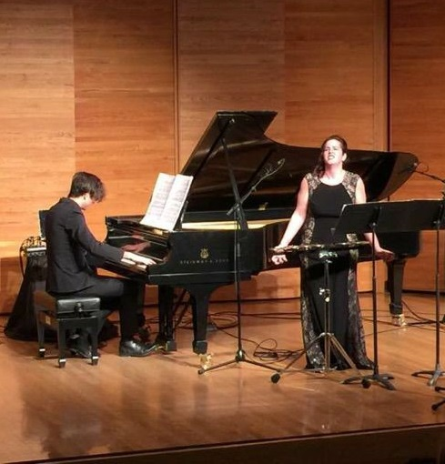

*Denotes Canadian Composer
**Denotes World Premier
Operatic Roles
Britten, B.
The Rape of Lucretia
Role: Female Chorus
Menotti, G.C.
Amahl and the Night Visitors
Role: Mother
The Old Maid and the Thief
Role: Mrs. Pinkerton, Laetitia (cover)
Mozart, W.A.
The Magic Flute
Role: Pamina (cover)
Figaro’s Wedding
Role: Marcelina
Poulenc, F.
The Dialogues of the Carmelites
Role: Mere Marie
Puccini, G.
Madama Butterfly
Role: Cio-Cio-San
Strauss, J.
Die Fledermaus
Role: Rosalinda (cover)
Todd, W
Alice’s Adventures in Wonderland
Role: Humpty Dumpty, Duchess
Selected Recital Repertoire
Barber, S.
Despite and Still
Britten, B.
On this Island
Corigliano, J.
Three Irish Folk Settings
Debussy, C.
Ariettes oubliées
Dvorak, A.
Ziguenermelodien
*Emery, Michael
Three Songs
*Harman, Brian
Sewing the Earthworm
Korngold, E.
Op. 22
Mahler, G.
Rückert-Lieder
*Morawetz, Oscar
3 Songs to Poems by William Blake
*Lizée, Nicole
**Malfunctionlieder
*Plessis, Jesse
**Je t’écris
Schwantner, J.
Two Poems of Agueda Pizarro
Strauss, R.
Op. 27
Vier letze Lieder
*Staniland, Andrew
Execution Songs
Trojahn, M
Ich will ein Reiter werden
Ullman, V
Six Sonnets de Louise Labé
Oratorio and Chamber Works
Bach, J.S.
Magnificat
Matthäus-Passion
Brahms, J
Liebeslieder Walzes, Op. 52
PETER MAXWELL DAVIES
Anakreontika
Handel, G.F.
Messiah
Tavener, J.
Lament for Phaedra
